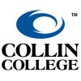

- Responsible for the administration and maintenance of network infrastructure and compute/storage environments.
- Manage switches, routers, firewalls, WAN/internet connectivity, wireless networks, data center management, virtual server environments, and VoIP solutions.
- Optimized network performance, reducing latency by 15% across the district.
- Implemented security protocols that enhanced data protection.
- Collaborated with cross-functional teams to support over 2,000 end-users.
Education
Bachelor of Science in Information Technology
Excelsior University | Jan 2022 – Jul 2023
Magna Cum Laude, Upsilon Pi Epsilon Honor Society
- Focused on network security and cloud computing.
- Completed a capstone project on scalable network solutions.

Associate of Applied Science in Marketing
Collin College | 2013 – 2017
Studied marketing principles, consumer behavior, and strategic planning.
- Developed strong communication and analytical skills.
- Participated in marketing campaigns and case studies.